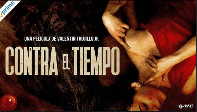

Nuestro Contenido
En esta sección se podra ver los proyectos relizados por la empresa DestinoFilms que se encuentran en la plataforma de Prime Video, acompañado de una descripción corta de dicho proyecto.
- Culpable o inocente
Cuando la vida de Elida (Estrela Almada) y su esposo (Rigo Chavez) comenzaba a sonreir, sufren la muerte de su hijo obligandolos a vender su casa y comprar una propiedad alejada en el bosque que oculta un sangrieto misterio por resolver. - Refugio Mariscal
Corre el año de 1932 donde Refugio Mariscal, un campesino honesto y trabajador organiza un levantamiento de armas en contra de Don Demetrio, el hacendado mas poderoso de El saltire, un pueblo abusado por sus caciques. Refugio Marriscal promete resturar la paz y asentar los derechos de los campesinos y para lograrlo necesitan unificar fuerzas con todo el pueblo. - Contra el tiempo
Algunas adolescentes han desaparecido de la ciudad y la policia no ha tomado riendas sobre el asunto. Renata; una posicionada oficinista sufre la misma suerte cuando secuestran a su hija, ella inicia una busqueda que va contra el reloj.